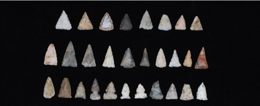
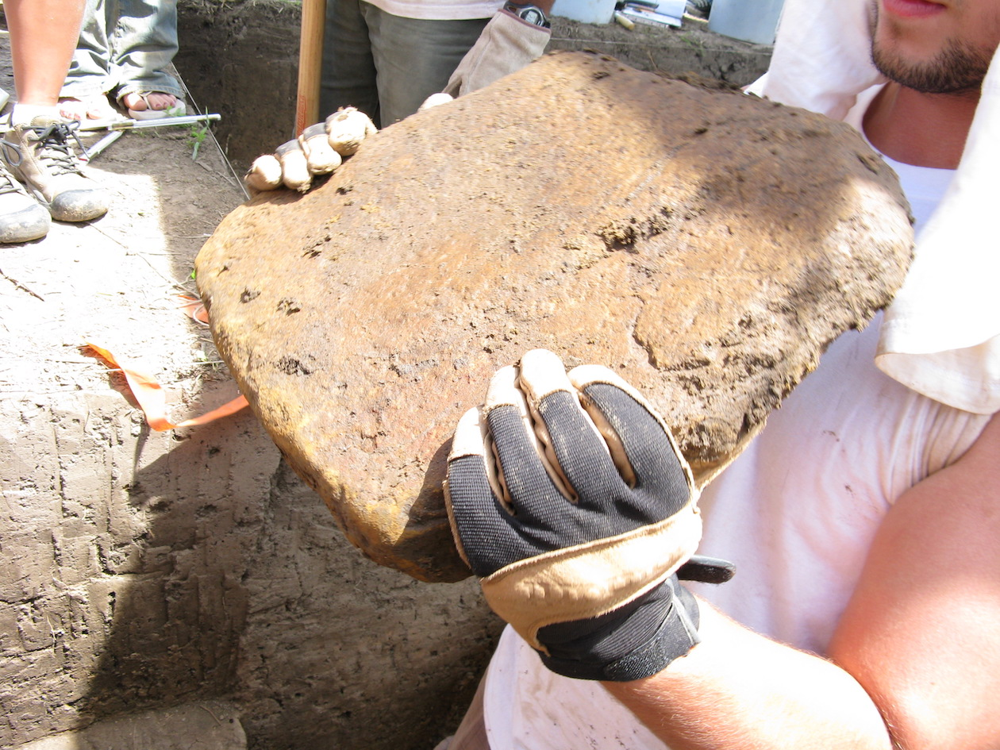
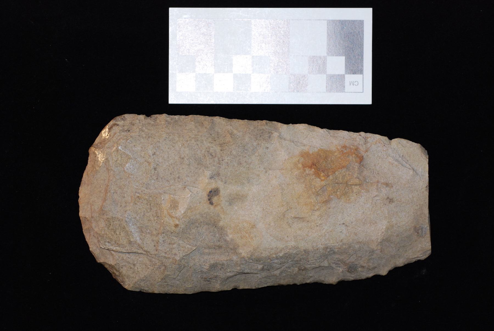
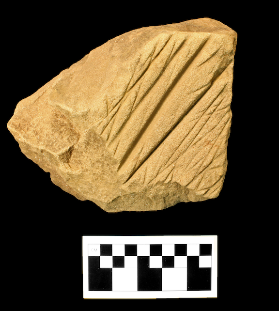

{kind=link}
{kind=link}
{kind=link}
{kind=link}


contact us
Questions? Comments? Please Contact Us!
Michigan State Univeristy
Department of Anthropology
355 Baker Hall
East Lansing, MI 48824
@MortonVillage
Lithic material is also known as stone. At Morton Village, lithic material including stone tools and projectile points are found across the site. By analyzing stone material and the human modifications made to them, archaeologists are able to determine the process by which the tools are made, what they were used for, and from where the stone material originated.
 Why is this important? Understanding these processes give archaeologists a better understanding of the culture of the population they are studying. Possible questions that could be addressed include: Were the Morton Village people using their tools to cut meat or plants? What type of projectile points were used to hunt? Was the lithic material imported from a long distance through trade networks or could it be collected locally? What type of technologies they had also can reveal the various activities that occurred at the site, such as agricultural tools or woodworking tools.
 For Feature 260, there were a variety of lithic materials recovered. Types of stone included several projectile points, various sized flakes (the bi-product of tool production), and a partial core (the middle of the stone that flakes are broken off of). Several of the larger flakes were modified to be used expediently, which means that they were sharpened or modified slightly and used for a specific quick task, then discarded. In this feature, you are able to see the full range of lithic products, the projectile points, and the bi-products of creating them, showing that stone tool production occurred within the Morton Village site.